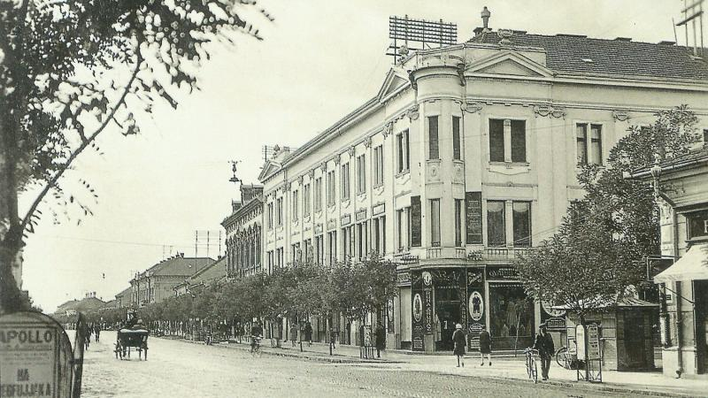

A város történelme messze visszanyúlik az idők homályába. Első irásos említése 1330-ból származik, habár a környék az ókor óta lakott. Nem is gondolnánk, hogy egy ilyen kis város történelme milyen gazdag és érdekes. Ha érdekel hogy miként alakult Békéscsaba a középkortól napjainkig, akkor olvass tovább!
Olvass tovább